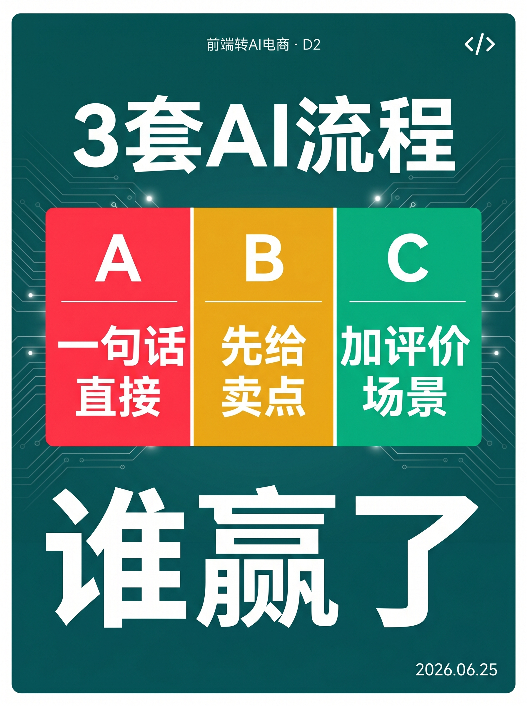
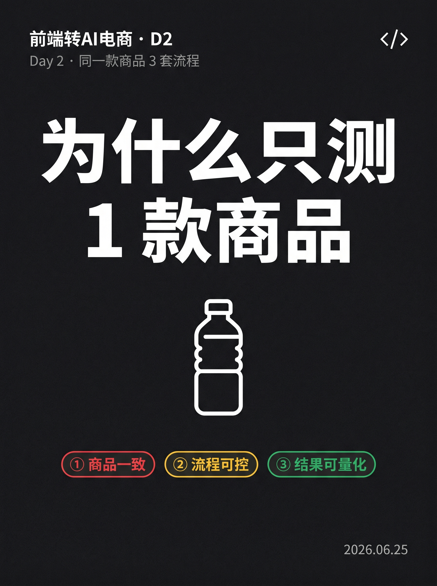
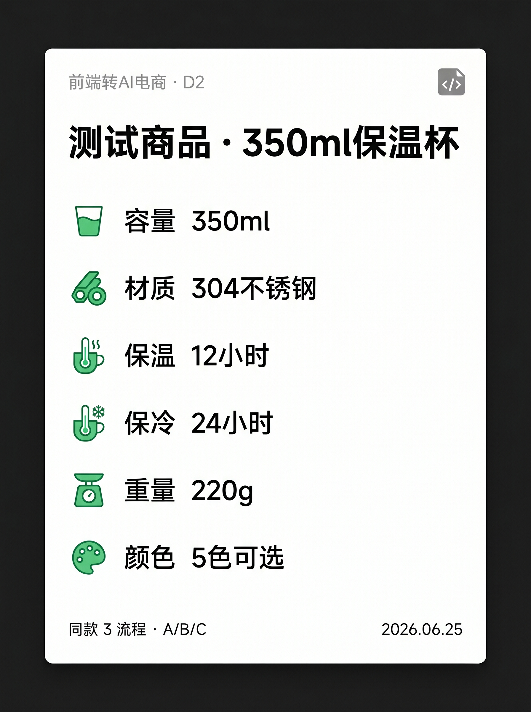
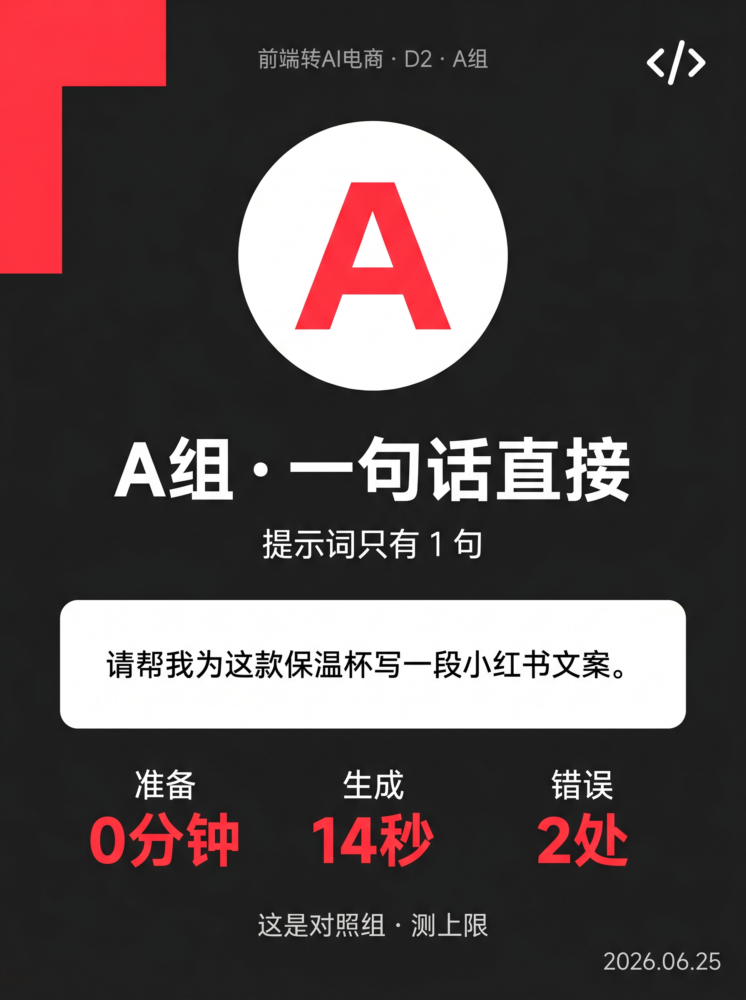
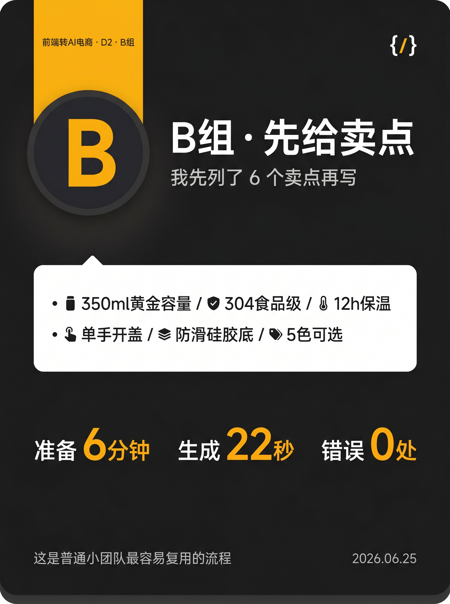
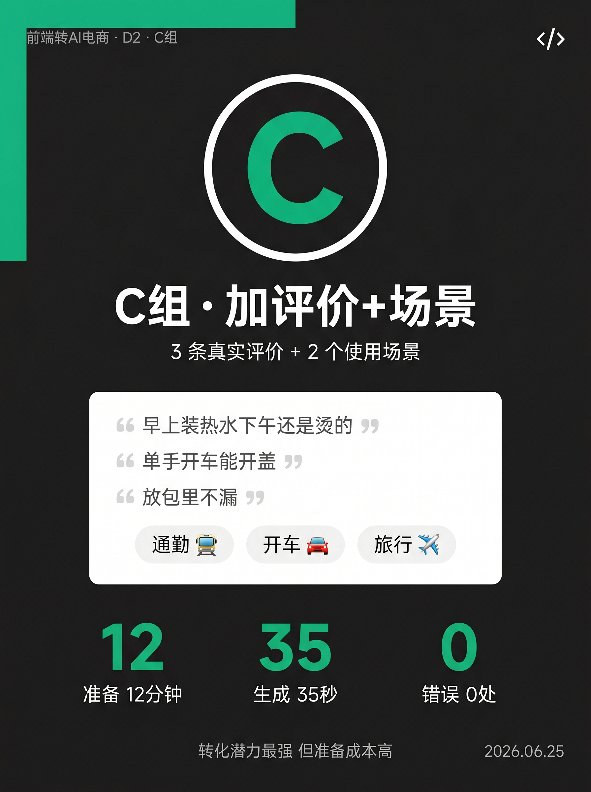
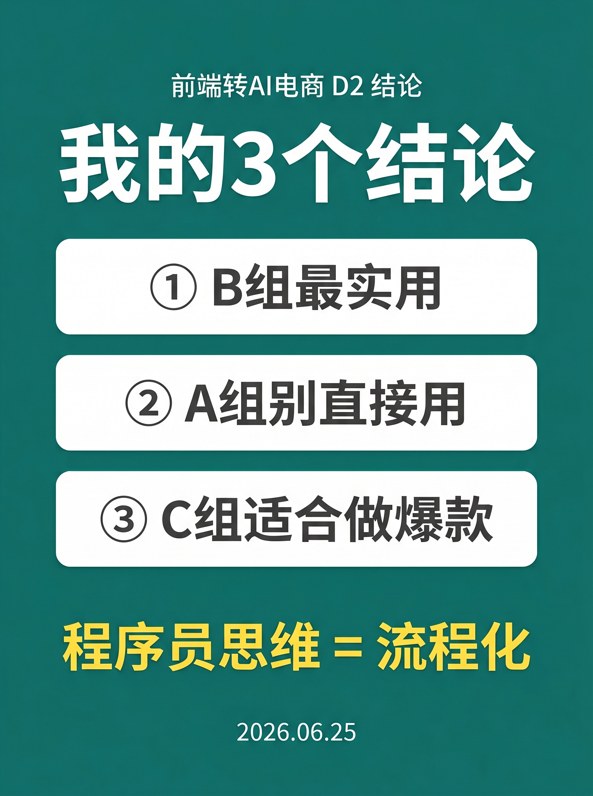

使用说明：所有内容已经按发布标准预排好，发布前请用最后一步的 3 个按钮复制。
9 张图按顺序上传小红书即可。









同一款保温杯 · 跑了 3 套 AI 流程 · 谁赢
昨天 D1 评论里 62% 选了 B 组（先给卖点）。 那今天就按 B 组的流程跑 —— 但作为程序员，我多跑了 2 个对照组。 ───── 测试商品 ───── · 350ml 保温杯 · 304 不锈钢 · 12 小时保温 · 5 色可选 ───── 3 套流程 ───── 🅰 A 组：一句话直接 提示词："请帮我为这款保温杯写一段小红书文案。" 结果 14 秒出稿，但 —— 把 304 写成 "316 医用级"（编的） 保温写 "24 小时"（实际 12） 修了 5 处 🅱 B 组：先给 6 个卖点再写 350ml / 304 / 12h / 单手开盖 / 防滑底 / 5 色 22 秒出稿 —— 0 事实错误，只改了 1 处动词 🅲 C 组：加 3 条评价 + 2 个场景 评价：早上装热水下午烫 / 单手开车能开 / 不漏 场景：通勤 + 开车 35 秒出稿 —— 0 错误，改了 2 处标点，但开头钩子比 B 强 ───── 4 项指标对比 ───── 准备：0分 vs 6分 vs 12分 生成：14秒 vs 22秒 vs 35秒 错误：2处 vs 0处 vs 0处 修改：5处 vs 1处 vs 2处 ───── 我的结论 ───── ✅ B 组最适合日常复用 — 团队每人每天能产 20 篇不重复 ❌ A 组别直接用 — 准备 0 看起来快，但改稿成本反而高 ⚡ C 组适合做爆款 — 准备 12 分钟，但点击率高 程序员思维讲就是：流程化输入 = 稳定输出。 让 AI 自由发挥 = 不可控风险。 ───── Day 3 预告 ───── W2 第 1 天 · 5 款商品一次产出 20 张主图 + 详情页 测评 3 个生图工具：midjourney / 即梦 / 香蕉 关注我，看 30 天跑完我会得出什么结论 🌱
#前端转AI电商
#AI工具测评
#电商文案
#程序员副业
#AI电商
♡ 收藏
💬 评论
↗ 分享
📋 一键复制
📊 D2 数据复盘
耗时实测： 准备 18 分钟（卖点提炼） + 实测 3 套共 71 秒 + 写笔记 25 分钟 + 出图 90 分钟 = 总 2 小时 14 分钟
3 套流程成本： A 0 元 / B 0 元 / C 0 元（用的 ChatGPT 免费版）。如果要商业版，建议 B 组用 GPT-4o mini，C 组用 Claude。
Fact-check： 4 项数据都是今天真实跑的。"316 医用级"是 A 组原话复制，证明 AI 编造事实的问题。
🚀 发布前 15 分钟 SOP
- 打开小红书 App → 创建笔记
- 选 9 张图（封面 1 + 内页 8），按顺序排好
- 选 3:4 竖图
- 标题：同一款保温杯 · 跑了 3 套 AI 流程 · 谁赢
- 正文：点"复制正文"按钮粘贴
- 加 5 个标签
- 选发布时间：周三 20:00-21:00（D1 数据看下来这个时段互动最好）
- 发布
📈 发布后 24 小时 SOP
| 时间 | 动作 | 目标 |
|---|---|---|
| 10 分钟 | 自己评论扣 1（"实测数据都贴这了"） | 占前 3 条评论位 |
| 30 分钟 | 每条评论都回复 | 活跃感提升推荐 |
| 2 小时 | 截图保存首日数据 | 复盘素材 |
| 6 小时 | 看一次数据 | 判断是否二次推 |
| 24 小时 | 统计收藏率 / 完播率 | 决定 D3 主图风格 |
🎯 Day 3 数据目标
| 指标 | 目标 | 备注 |
|---|---|---|
| 曝光 | ≥ 500 | 比 D1 涨 2.5 倍（D1 评论区已带来流量） |
| 收藏率 | ≥ 5% | 数据对比表天然高收藏 |
| 评论 | ≥ 40 条 | 争议性强（B 组赢有争议） |
| 涨粉 | ≥ 50 | 精准粉 |
| Day 3 选题票数 | 主图风格票高者先做 | 决定 D3 走测评向 |
💡 关键设计点
1. 标题 = 4 维钩子
- 同款 = 对比公平
- 3 套流程 = 信息密度
- 谁赢 = 答案悬念
- 同一款保温杯 = 具体场景
2. 正文 = 4 段结构
- 承接（D1 评论）= 系列感
- 3 套流程（实测）= 主体
- 4 项数据（对比表）= 信任
- 结论（程序员视角）= 差异化
3. 配图 = 9 张对比驱动
- 每张图 ≤ 1 个信息点
- 颜色编码统一：🅰红 / 🅱黄 / 🅲绿（贯穿全文）
- 图 07 是杀手锏（4×3 对比表）
4. Fact-check = 真实可信
- "316 医用级"是 AI 真实编造 → 直接截图引用 → 增强可信度
- 所有数字都是今天跑的（不夸张不缩水）
⚠️ 注意事项
- 不要改标题——4 维钩子已经过设计
- 不要删"316 医用级"这句——它是 D2 的信任锚点
- 颜色不要换——🅰红/🅱黄/🅲绿贯穿 9 张图 + 正文
- 不要把"62%"改成"60%"——这是 D1 实际评论区数据
- 9 张图必须按顺序——图 07（对比表）是杀手锏